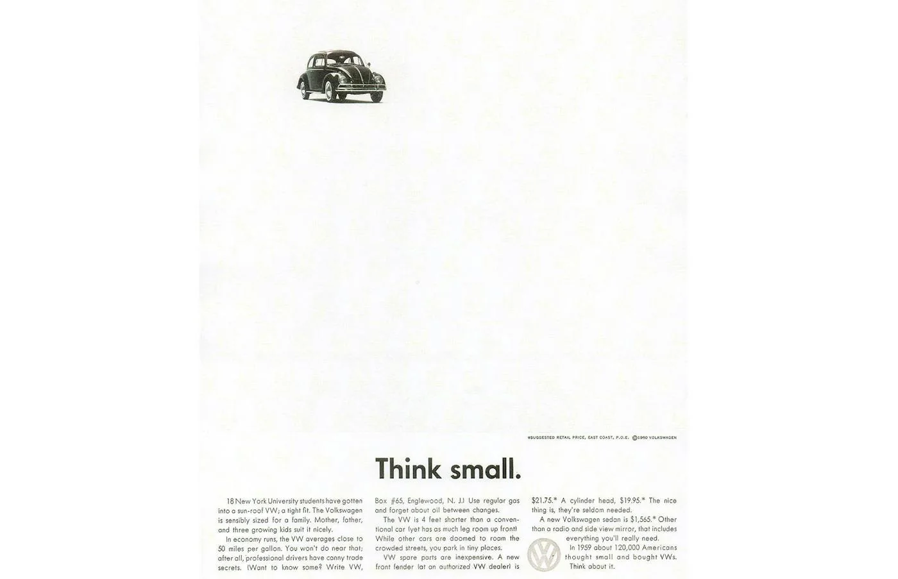

7. La publicidad debe entenderse rápidamente
Captar atención no es suficiente.
Una comunicación eficaz necesita convertir esa atención en comprensión.
Por eso cada pieza debería contar con una jerarquía clara de información.
El receptor debería poder identificar rápidamente:
1. qué se le está diciendo;
2. por qué debería importarle;
3. quién se lo está diciendo;
4. qué puede hacer después.
Aplicado al PASE
Una publicación sobre Círculos de Estudio no debería obligar al estudiante a descubrir entre múltiples textos:
• qué es;
• quién puede participar;
• cuándo;
• dónde;
• cómo inscribirse.
El mensaje principal debe dominar visualmente.
La información secundaria debe permanecer secundaria.
Ejemplo
La publicidad clásica de Volkswagen creada por DDB —como Think Small— resulta interesante porque una idea dominante organiza toda la pieza.

Puede existir mucho texto, pero no existen cinco mensajes compitiendo por ser el principal.
Criterio operativo
Antes de publicar una pieza, preguntar a alguien que no participó en su diseño:
“¿De qué trata esto?”
Si necesita observarla detenidamente o responde algo distinto del mensaje que se quería transmitir, debe simplificarse.
Referencias
- DDB. (s. f.). About us. https://www.ddb.com/about/
- Pieters, R., & Wedel, M. (2004). Attention capture and transfer in advertising: Brand, pictorial, and text-size effects. Journal of Marketing, 68(2), 36–50. https://doi.org/10.1509/jmkg.68.2.36.27794